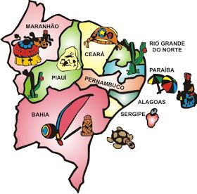
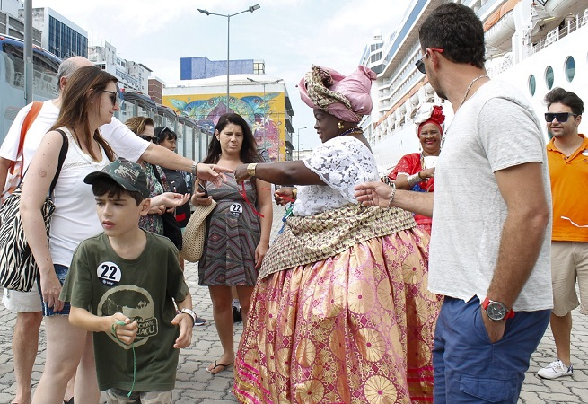
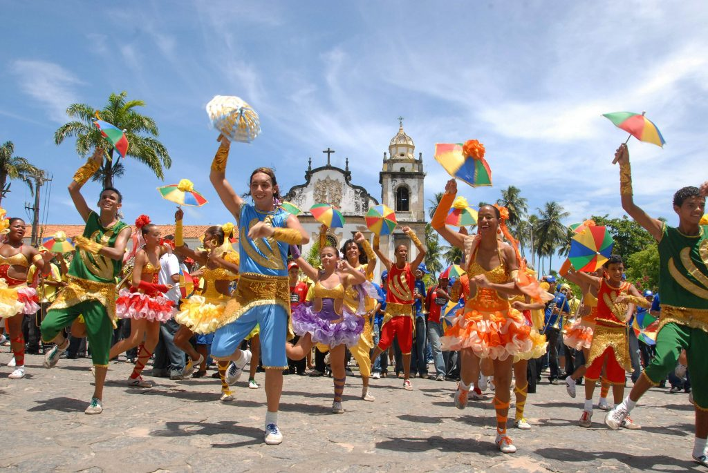

Porque viajar pelo nordeste?
O Nordeste brasileiro é uma das regiões mais bombadas do país quando o assunto é viajar. Praias paradisíacas, uma culinária deliciosa e a hospitalidade são alguns dos motivos da região ter se tornado a queridinha entre os turistas (e a nossa também). Vem com a gente e conheça esses e outros motivos para não perder tempo e marcar sua viagem para um desses estados maravilhosos.
1º As pessoas
Quem mora no nordeste é conhecido pelo seu perfil hospitaleiro. Você sabia que em uma pesquisa realizada em todos os estados, 98,6% dos turistas apontaram essa característica como um grande diferencial? Os moradores de lá estão realmente interessados em ajudar os visitantes e a proporcionar as melhores experiências locais. Além disso, possuem um sotaque que, vamos combinar, é de apaixonar.
2º A comida
Precisa falar? Os estados do Nordeste possuem receitas gastronômicas que agradam aos mais variados tipos de paladar. Dentre os ingredientes mais utilizados, estão legumes variados, frutos do mar, a carne de boi e também a tradicional carne de bode. Delícias que possuem os temperos típicos da região e que você não pode deixar de experimentar.

3º A música
Os ritmos do nordeste contagiam, né? A música animada, típica da região, coloca todo mundo para dançar. Seja pelo ritmo do Frevo, o gingado do maracatu ou alegria do axé, o importante é ver todo mundo balançando o corpo e curtindo a folia. Mais um motivo eletrizante para se jogar pelas cidades do nordeste! Partiu?
Nossa Terrinha - Recife
É a maior cidade em população de Pernambuco e a terceira maior da Região Nordeste. No âmbito brasileiro, é a nona cidade mais populosa do país. Em razão do restrito território, Recife também é uma das capitais mais densamente povoadas do Brasil, sendo extremamente urbanizada.